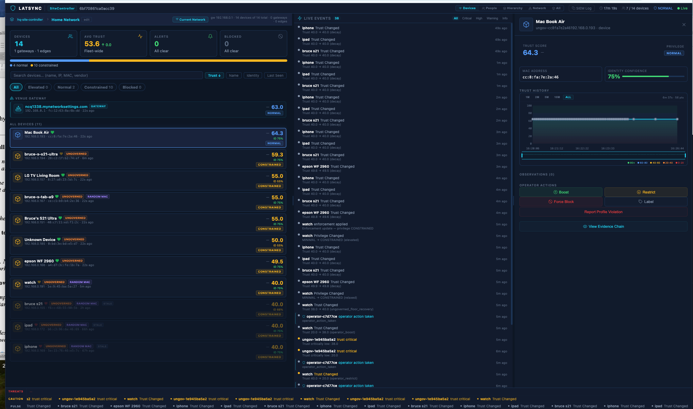

LatSync is a governance engine that runs on network infrastructure — switches, access points, gateways. It continuously evaluates every actor's behavior. No agents. No central controller. Every decision cryptographically evidenced. Working today on production hardware.

It is not network security. It is not monitoring. It is not access control. It fills the governance gap between authentication and detection that no existing product category addresses. Identity systems verify who you are. Monitoring systems watch what happened. LatSync governs what is happening — continuously, cryptographically, and without inspecting a single byte of content.
Identity systems verify who you are at the gate. Monitoring systems watch after the fact. Between those two — in the 241 days it takes to detect a breach — nothing governs what devices actually do on the network. LatSync fills that gap.
Every other security system governs from the top down — central controller pushes policy to endpoints. LatSync governs from the bottom up. Each device governs itself. Compromise one, you get one. No central controller to take down.
People, laptops, printers, cameras, USB peripherals, cellular base stations, satellites, AI agents, microservices. The substrate doesn't matter. The behavior does. One engine governs them all under one evidence chain.
Both sides of every communication independently agree. Compromise one side — the other still protects itself.
Trust history survives restarts and reconnections. Cryptographically chained. Cannot be reset. Cannot be tampered with.
Five tiers earned through behavior. Not assigned by admins. A suspicious camera keeps recording but can't reach external IPs.
Trust decays without activity. Randomized MACs governed per-session and aged correctly. Time is a first-class governance signal.
A compromised device on guest WiFi tries to reach payment terminals. The access point detects behavioral deviation and revokes outbound access — before the first malicious packet reaches the POS network. No firewall rule. No SOC analyst. The AP did it. Evidence record generated automatically. PCI-DSS audit trail satisfied by architecture.
FDA-regulated infusion pumps cannot run third-party agents. No security vendor can touch them. LatSync governs them from the switch — fingerprinting behavior, scoring trust, constraining communication. Device-level governance without modifying a single medical device. Every decision HIPAA audit-ready.
A customer walks in, connects to WiFi, opens the app. The enrollment portal governs their device under a pre-registered behavioral profile. Any deviation from expected behavior is a governance signal. The app can optionally bundle a lightweight governance endpoint — making the customer's device a governed node. Live and running today.
An employee's laptop starts scanning internal IPs at 2am. Trust score drops. Privilege degrades from Normal to Constrained automatically. Scanning continues — blocked entirely. Evidence chain shows exactly what happened and when. Mean time between anomaly and containment: zero. Enforcement IS the evaluation.
Within the first scan cycle, every active device across 7 subnets was discovered, fingerprinted, trust-scored, and placed under continuous behavioral governance. 3.6 million behavioral observations cryptographically chained across 10 distinct observation types — including 100% of the devices that had no security coverage before LatSync.
99.7% of the 644 devices on a production network were communicating freely with no behavioral governance whatsoever. No baseline. No trust scoring. No cryptographic record of their activity. This is the current state of every network that doesn't have LatSync.
Two operators were governed by the identical engine as every device — behavioral scoring, evidence chain, trust evaluation, privilege assignment. Every operator action generated a tamper-evident record. No other network security product governs the administrator.
Every governance decision, every trust evaluation, every operator action is recorded in a SHA-256 hash-chained evidence sequence. Append-only. Tamper-evident. Exportable. Forensic-grade.
The evidence chain incorporates device-specific entropy at derivation time. A forged chain requires the actual physical hardware — software alone cannot replicate it. The chain is physically anchored, not just cryptographically linked.
No manual audit assembly. No separate compliance product. The infrastructure produces the audit trail as a byproduct of governance. SOC 2, HIPAA, PCI-DSS, and GDPR audit requirements satisfied by architecture.
LatSync never inspects payload content. Ever. It governs behavioral patterns of infrastructure actors — never transaction amounts, patient records, account numbers, or message content. HIPAA, GDPR, ECPA, and wiretap statutes do not apply. Every competing product that performs deep packet inspection carries this regulatory exposure. LatSync does not.
Every other system lets a compromised device disconnect and reconnect with a clean session. LatSync prevents it. Behavioral history is persistent and cryptographically chained. Bad behavior has memory. The network never forgets.
In every other system, access is given at authentication and must be explicitly taken away. LatSync earns authority continuously — demonstrated through behavior, moment by moment.
SIEM and forensics reconstruct what happened after the breach. LatSync generates cryptographic proof before enforcement — evidence is created at the moment of the decision, not after the damage.
Every security product has an admin bypass. LatSync governs the administrator with the same engine as every device. Every admin action generates a tamper-evident record. No exceptions.
Embed LatSync in your infrastructure. Every device your customers connect becomes a governed endpoint. Your cloud-managed network platforms, AI-driven management tools, and infrastructure-as-a-service offerings gain behavioral governance and a cryptographic evidence chain they cannot build themselves. LatSync doesn't replace your tools. It gives them teeth. Per-device licensing. Revenue grows with the customer's network.
Runs as a governance service on switches, access points, and gateways. Sits in the data plane. Listens to everything. Every port and every wireless association becomes a governed boundary. The OEM integration path — governance ships inside the hardware your customers already buy.
Deploys on any Linux or macOS host. Gateway-level governance — all traffic passing through is governed. 644 devices governed through a single gateway on a live network today. Zero cloud dependency. Each node operates autonomously.
Boots a hardened Linux kernel from USB with governance as a native OS primitive. The governance engine runs below the application layer. A compromised application cannot reach the governance engine because it is not in the application layer. Fundamentally different threat model.
Enrollment portal governs customer devices under pre-registered behavioral profiles. Optionally bundles a lightweight governance agent — making the customer's device a governed node. Running today in production. Retail, hospitality, healthcare, any business with customer-facing WiFi.
Every server, VM, and container governed from the switch layer. East-west traffic between workloads evaluated continuously. Compromised containers constrained before lateral movement begins. Evidence chain spans the entire infrastructure.
Guest WiFi and payment networks on the same infrastructure — governed separately by behavior. A device on guest WiFi that attempts to reach payment terminals is constrained before the first packet arrives. PCI-DSS audit trail generated automatically.
FDA-regulated devices that cannot run agents are governed from the network infrastructure. Behavioral fingerprinting, trust scoring, and communication constraints — without touching the device. Every governance decision HIPAA audit-ready.
The cryptographic evidence chain exports directly to your SIEM. LatSync doesn't replace your SOC — it feeds it governed, tamper-evident data. SOC analysts see behavioral governance events, not raw logs. Reduces alert fatigue. Accelerates incident response.
Runs as a listener on your home network. Every IoT device, smart TV, thermostat, and camera identified, fingerprinted, and behaviorally tracked. A compromised baby monitor that starts exfiltrating data is constrained automatically. No technical knowledge required.
Thermostats, access control panels, lighting systems, environmental sensors — governed without agents. Behavioral baselines built from actual observed communication. Deviation from expected patterns triggers automatic trust degradation.
Guests with randomized MACs governed per-session. Returning loyalty members recognized through behavioral credentials — no centralized customer database. Guest WiFi becomes a governed asset. Every session produces an evidence record.
5G base stations, UE devices, handover events, and O-RAN controllers governed as behavioral actors with trust history. Rogue base stations detected by behavioral deviation. Man-in-the-middle protection through governance — not signatures.
Behavioral governance for USSD-based financial infrastructure. Governs carrier actor patterns without inspecting transaction content — amounts, account numbers, and PINs are never visible to the governance engine. Regulatory-clean in every jurisdiction.
Infrastructure vendors embed LatSync in their hardware. Every device their customers connect becomes a governed endpoint. Cloud management platforms and AI-driven network tools gain behavioral governance they cannot build themselves. Per-device recurring revenue.
Full governance capability with zero cloud dependency. No phone-home. No external data flow. Each governed node operates autonomously with its own evidence chain. Designed for classified, military, and critical infrastructure environments.
AI agents are first-class governed entities. An AI agent's network communications are evaluated against behavioral baselines just like any other actor. An agent that starts communicating with unexpected endpoints is constrained. The evidence chain records every AI-to-infrastructure interaction.
30-minute session on a live network. Attack scenario with autonomous containment. Evidence chain walkthrough. Ungoverned device identification across your subnets.
Under NDA. Integration mapping for your infrastructure. Engineering deep-dive into bilateral authorization. IP discussion at claim level. Competitive moat analysis.
Deploy in your environment. Per-device royalty, annual license, or joint development. OEM embedding available. Full IP retained by LatSync.
We deploy against your live network with zero agents and zero configuration changes. Tell us what you're looking for.